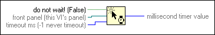

Wait For Front Panel Activity Function
Owning Palette: Dialog & User Interface VIs and Functions
Requires: Base Development System
Pauses the execution of the calling VI block diagram in run mode until the function detects front panel activity in the front panel you want to monitor.

 Add to the block diagram Add to the block diagram |
 Find on the palette Find on the palette |